Sim 1
## Error in layer(geom = geom, stat = stat, data = data, mapping = mapping, : object 'region' not foundSim 1
## Nonstationary Poisson process
##
## Log intensity: ~covar + treatment
##
## Fitted trend coefficients:
## (Intercept) covar treatmentTRUE
## -16.7260444 1.8995594 0.9942855
##
## Estimate S.E. CI95.lo CI95.hi Ztest Zval
## (Intercept) -16.7260444 0.1003112 -16.9226506 -16.529438 *** -166.741625
## covar 1.8995594 0.0569651 1.7879099 2.011209 *** 33.346022
## treatmentTRUE 0.9942855 0.1140223 0.7708058 1.217765 *** 8.720095## Nonstationary Poisson process
##
## Log intensity: ~covar + treatment + s(x, y, k = 40, bs = "gp")
##
## Fitted trend coefficients:
## (Intercept) covar treatmentTRUE s(x,y).1 s(x,y).2
## -1.677061e+01 1.857805e+00 1.157643e+00 1.308127e-01 1.586274e-01
## s(x,y).3 s(x,y).4 s(x,y).5 s(x,y).6 s(x,y).7
## 1.851032e+00 -1.268260e+00 -8.517979e-01 1.935719e+00 -6.313675e-01
## s(x,y).8 s(x,y).9 s(x,y).10 s(x,y).11 s(x,y).12
## -9.777400e+00 1.193745e+00 3.809456e+00 1.895706e+01 9.395360e+00
## s(x,y).13 s(x,y).14 s(x,y).15 s(x,y).16 s(x,y).17
## 1.557233e+01 -1.921236e+01 4.194574e+01 -2.257302e+01 -5.621645e+01
## s(x,y).18 s(x,y).19 s(x,y).20 s(x,y).21 s(x,y).22
## -4.895068e+00 7.583892e+01 1.574253e+02 -9.890585e+01 4.353950e+01
## s(x,y).23 s(x,y).24 s(x,y).25 s(x,y).26 s(x,y).27
## -5.145831e+01 4.950129e+01 -8.956297e+01 5.256704e+01 -1.806103e+02
## s(x,y).28 s(x,y).29 s(x,y).30 s(x,y).31 s(x,y).32
## -9.424556e+01 -2.062581e+02 -8.425924e+01 1.415491e+02 1.187880e+02
## s(x,y).33 s(x,y).34 s(x,y).35 s(x,y).36 s(x,y).37
## -6.744702e+01 -1.625844e+01 2.410475e+02 1.167960e+02 -1.187957e+00
## s(x,y).38 s(x,y).39
## 2.353807e-05 -1.731060e-06
##
## For standard errors, type coef(summary(x))## Nonstationary Poisson process
##
## Log intensity: ~treatment + s(x, y, k = 40, bs = "gp")
##
## Fitted trend coefficients:
## (Intercept) treatmentTRUE s(x,y).1 s(x,y).2 s(x,y).3
## -1.573631e+01 4.605622e-01 8.696668e+00 -8.073723e+00 -6.954356e+00
## s(x,y).4 s(x,y).5 s(x,y).6 s(x,y).7 s(x,y).8
## -2.118454e+01 -1.742032e+01 -4.839068e+01 -2.672115e+01 -4.407867e-01
## s(x,y).9 s(x,y).10 s(x,y).11 s(x,y).12 s(x,y).13
## -9.114306e+00 -9.583901e+01 8.007622e+01 9.634110e-01 6.610083e+01
## s(x,y).14 s(x,y).15 s(x,y).16 s(x,y).17 s(x,y).18
## -1.663696e+02 1.642198e+02 -2.827269e+02 -2.321814e+02 -8.285775e+01
## s(x,y).19 s(x,y).20 s(x,y).21 s(x,y).22 s(x,y).23
## 4.048585e+02 3.835511e+02 9.358843e+01 2.048240e+02 1.646919e+02
## s(x,y).24 s(x,y).25 s(x,y).26 s(x,y).27 s(x,y).28
## 5.166817e+02 -3.725372e+02 -8.241404e+01 -8.674480e+02 -1.175203e+03
## s(x,y).29 s(x,y).30 s(x,y).31 s(x,y).32 s(x,y).33
## -1.375890e+03 -1.529588e+03 -1.235122e+03 9.150871e+02 1.167066e+03
## s(x,y).34 s(x,y).35 s(x,y).36 s(x,y).37 s(x,y).38
## -7.827718e+02 3.829656e+02 -2.306362e+03 7.630615e+01 2.578059e-04
## s(x,y).39
## -1.219221e-03
##
## For standard errors, type coef(summary(x))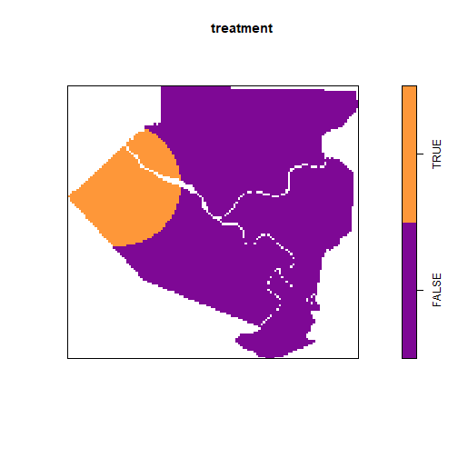
Sim 2
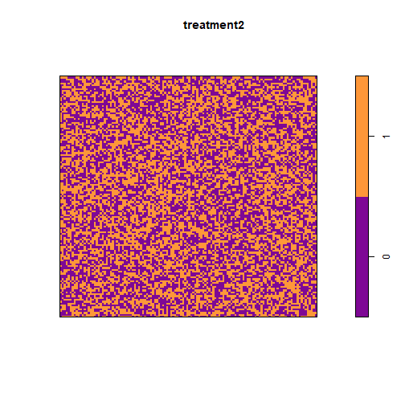
## Nonstationary Poisson process
##
## Log intensity: ~treatment2 + covar
##
## Fitted trend coefficients:
## (Intercept) treatment2 covar
## -16.4888667 0.7822643 0.8043411
##
## Estimate S.E. CI95.lo CI95.hi Ztest Zval
## (Intercept) -16.4888667 0.1172186 -16.7186110 -16.2591224 *** -140.667622
## treatment2 0.7822643 0.1307613 0.5259769 1.0385518 *** 5.982384
## covar 0.8043411 0.0672548 0.6725241 0.9361581 *** 11.959609Sim 3
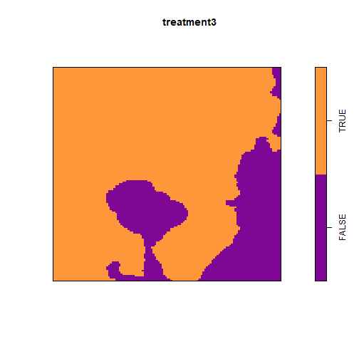
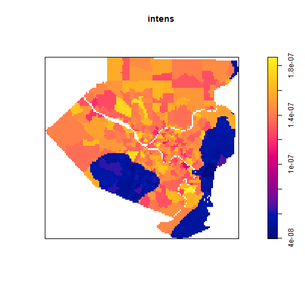
Sim 4
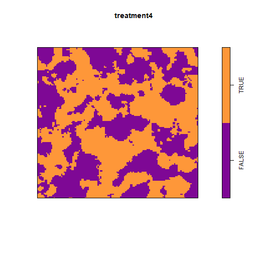
## Error in gam(.mpl.Y ~ treatment4 + covar + te(x, y, bs = "gp", k = 10), : could not find function "gam"## Error in gam(.mpl.Y ~ treatment5 + covar + te(x, y, bs = "gp", k = 10), : could not find function "gam"Sim 5
Sim 6
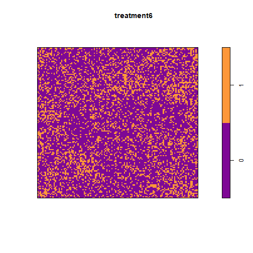
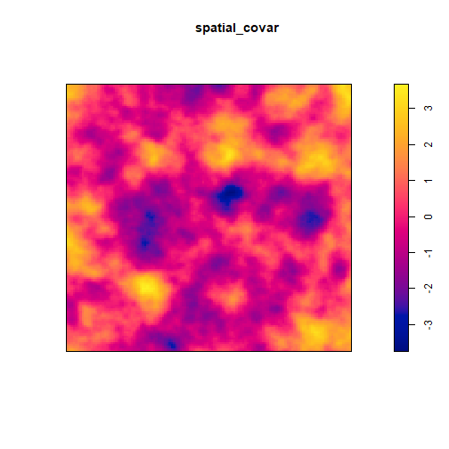
Sim 7
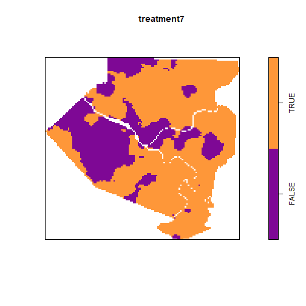

Sim 8
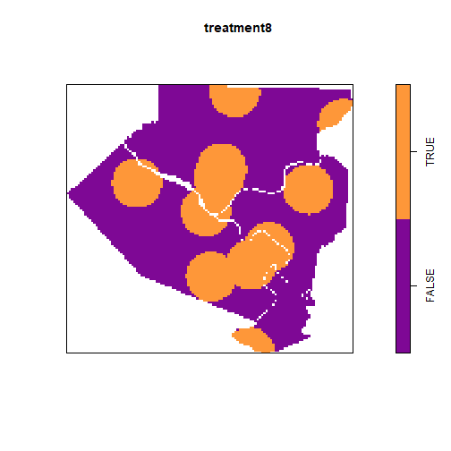
########################### ## CONTINUOUS TREATMENTS ## ###########################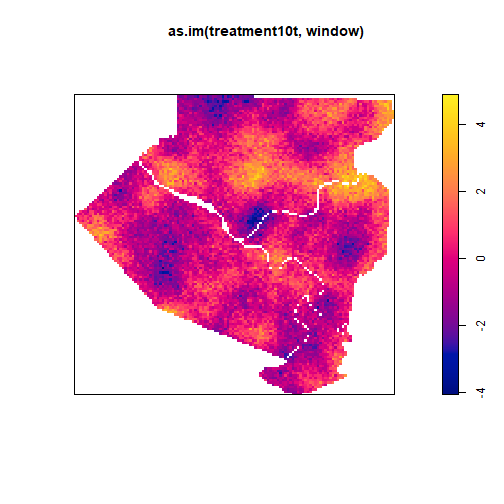
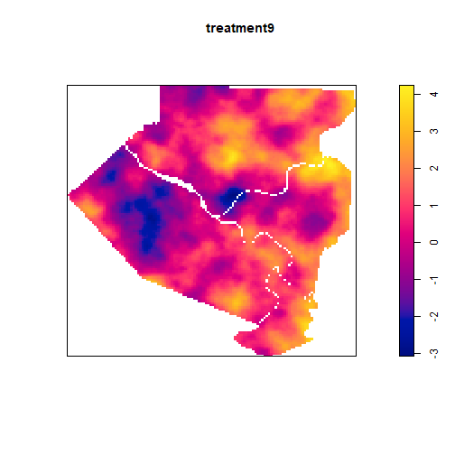
## Error in slice.i[inside] <- slice.inside.i: replacement has length zero## Error in is_empty(x): object 'partials' not found## Error in h(simpleError(msg, call)): error in evaluating the argument 'x' in selecting a method for function 'plot': object 'broken_covar' not found